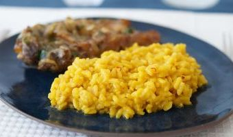

.jpg)
.jpg)
.jpg)
Pollo a la calabresa

- Ingredientes
- 1 pollo mediano contrado en trozos
- 1 cucharada de jengibre fresco rallado
- 2 cucharadas de aceite
- 6 dientes de ajo picados
- 2 cucharadas de perejil picado
- 1 cucharada de ají molido picante
- 1 taza de agua caliente
- 2 cubitos de caldo
Primero condimentar el pollo con pimienta y jengibre rallado. Dorar las presas de pollo en el aceite caliente y mantener aparte. Luego incorporar en el mismo aceite el ajo picado y dorarlo ligeramente. Poner nuevamente el pollo, agregar el agua, donde previamente se disolvió el cubito de caldo de gallina y dejar cocinar a fuego medio dando vuelta las presas de vez en cuando. Finalmente una vez cocido el pollo agregar el perejil y el ají molido. Servir las presas de pollo acompañado con arroz hervido al natural.
Pizza casera
- Ingredientes (para dos pizzas)
- 160 gramos de harina de trigo
- 100 ml de agua templada
- 1 cucharadita de sal fina
- 1 cucharada de aceite de oliva
- 7 gramos de levadura seca de panadería o fresca (un cuarto de paquete)
En un vaso, vierte el agua templada. Disuelve la levadura en el agua. En un bol ponemos la harina, la sal y, poco a poco, vertemos el agua con la levadura. Es más fácil si vamos amasando poco a poco a medida que echamos el agua, hasta verter toda y lograr una masa homogénea. Tras esto, coloca la masa en la mesada, cúbrete las manos de harina para que no se pegue y ponte a amasar. Si la masa se queda pegajosa ve añadiendo más harina. Ésta tiene que quedar lo suficientemente seca para que no se pegue en la mesa o las manos, pero no demasiado, porque si no puede romperse en el horno. Una vez que la masa esté homogénea, elástica, pero no pegajosa, incorpora el aceite, y vuelve a amasar hasta que se integre por completo. Haz una bola y realiza dos incisiones para que pueda crecer bien. Devúelvela al bol, tápalo con un paño humedo y dejalo que repose a temperatura ambiente durante 45 minutos. Verás que, poco a poco, empiezan a elevarse hasta duplicar su volumen. Pasado el tiempo correspondiente, espolvorea un poco de harina sobre una mesa para preparar la pizza casera, ahora deberás extenderla con tus manos estirando desde el centro hacia los costados, dándole forma circular. Si dispones de rodillo también puedes utilizarlo para que quede más fina la masa. Una vez estirada, ya puedes añadir la salsa para pizza casera y los ingredientes para pizza que prefieras. Una vez hayas escogido los ingredientes y tengas tu masa de pizza casera terminada, deberás precalentar el horno a temperatura máxima durante unos 20 minutos. Pasado el tiempo, introduce la preparación pizza casera y hornéala durante 10 minutos aproximadamente. Deberás vigilarla porque el tiempo final variará en función del tipo de horno y la intensidad que tenga. ¡Listo, tu pizza casera al horno estará para chuparse los dedos!
Risotto a la milanesa con asafrán
- Ingredientes 4 porciones
- 400 gr de arroz para risotto.
- 1 cebolla
- 100 ml de vino blanco
- 1.5 litros de caldo de carne, de pollo o verduras.
- 50 gr de queso parmesano
- Unas hebras de asafrán
- Manteca y sal
Pela la cebolla y pícala finita con el cuchillo. En una olla (mejor si es baja) echa un poco de mantequilla y sal y ponla a fuego medio-bajo. Cuando esté caliente la mantequilla incorpora la cebolla y ve removiéndola de vez en cuando. Cocínala alrededor de 10 minutos, hasta que esté tierna y ligeramente dorada. Ve calentando el caldo o agua que vayas a utilizar ya que hay que ir echándoselo al risotto caliente. Puedes hacerlo en un cazo en el fuego o bien en un recipiente en el microondas, debe estar prácticamente hirviendo o casi. Si utilizas agua deberás echarle un poco de sal y si utilizas caldo, échale sal o no en función de si ya lleva. Cuando la cebolla esté lista sube el fuego un poco, echa el arroz y cocínalo un poco, que se tueste ligeramente, durante 2 o 3 minutos removiéndolo para que se mezcle con la cebolla. Sube el fuego para que esté a temperatura alta y vierte el vino blanco. Mantén así el fuego para que se evapore el alcohol, tardará unos 2-3 minutos. Ahora vuelve a bajar el fuego para que esté a temperatura media y ve añadiendo caldo caliente en tandas, una buena medida sería un vaso aunque esto es aproximado (unos 200 o 300 ml cada vez), y cuando el arroz lo haya absorbido casi por completo añade otra medida. La idea es continuar el proceso durante entre 15 y 20 minutos (a veces en el propio paquete del arroz nos indica los minutos que necesita). Ve removiendo de vez en cuando el arroz y siempre que le eches caldo o agua debe estar bien caliente. Respecto a la cantidad de líquido, lo estimado es 1,5 litros aunque puede haber variaciones y si tu risotto está antes de gastarlo por completo, no necesita más. Cuando lleve unos 15 minutos te recomiendo ir probando el arroz para comprobar el punto. Debe estar jugoso y con el centro hecho, que no se note duro, pero que en ningún caso llegue a estar pasado. Tritura un poco las hebras de azafrán (con un mortero o incluso con tus propios dedos) y échalas en un recipiente con un poco de caldo o agua. Remueve con una cuchara para que el azafrán despliegue todo su aroma y también su característico color amarillo. Cuando el risotto esté listo échale el azafrán con el líquido y mézclalo bien. Si te gusta que quede más amarillo puedes volver a mezclar azafrán con un poco de agua o caldo y echarlo al arroz. Apaga el fuego, aparta la olla e incorpora el queso parmesano rallado junto con un poco de mantequilla (yo suelo echar una cucharada sopera) y mézclalo con el risotto. Pruébalo por si hay que rectificarlo de sal y tapa la olla para que repose 5 minutos.
Macarrones a la boloñesa
- Ingredientes 4 porciones
- 400 gr de macarrones. Una ración puede ir entre 80 y 120 gr por persona, según gustos y si es plato único o no en tu menú.
- 300 gr de carne picada (100 de magro de cerdo y 200 de babilla de ternera).
- 1 zanahoria.
- 1 cebolla
- 100 ml de vino blanco
- 200 gr de salsa de tomate
- 500 ml de leche
- Orégano
- Aceite de oliva, sal y pimienta negra
Empezamos preparando la salsa boloñesa. Pela la cebolla y pícala finita. Pela la zanahoria con un pelapatatas, córtala por en medio y de nuevo cada parte por la mitad y pícala finita también. Puedes utilizar una sartén o una olla para prepararla, yo suelo utilizar una olla porque al final añadiré también la pasta ya cocida para mezclarla, pero en una sartén quedan igual de bien. Echa un poco de aceite en la olla o sartén, ponla a fuego medio-suave y cuando esté caliente añade la cebolla y la zanahoria junto con un poco de sal. Cocínalas durante unos 10 minutos o hasta que estén tiernas y apenas empiecen a dorarse. Si se doran demasiado pronto baja la temperatura del fuego para evitar que se quemen. Añade la carne picada, mézclala con el resto de ingredientes y ve picándola con una espátula para que se vaya separando y cocinando. Échale sal, pimienta negra recién molida y orégano al gusto. Cuando la carne deje de estar rosada sube el fuego para que esté alto, añade el vino blanco y espera a que se evapore el alcohol, tardará unos 2-3 minutos. Cuando la carne deje de estar rosada sube el fuego para que esté alto, añade el vino blanco y espera a que se evapore el alcohol, tardará unos 2-3 minutos. Baja el fuego para que esté suave e incorpora la salsa de tomate y la leche y déjalo cocer todo durante 20 minutos para que los sabores se fusionen y la carne quede tierna. Mientras tanto aprovecha para preparar a la vez los macarrones. Pon abundante agua en una olla a fuego alto y cuando esté hirviendo échale una cucharadita de postre de sal. En ese momento echa los macarrones y en cuanto hierva el agua de nuevo baja un poco la temperatura y empieza a contar los minutos que indique el paquete, en mi caso han sido 7 minutos. Cuando los macarrones estén listos échalos sobre un escurridor en el fregadero para que escurran el agua. Incorpora los macarrones a la olla de la salsa boloñesa con el fuego ya apagado, mézclalos bien y ya los tienes listos.